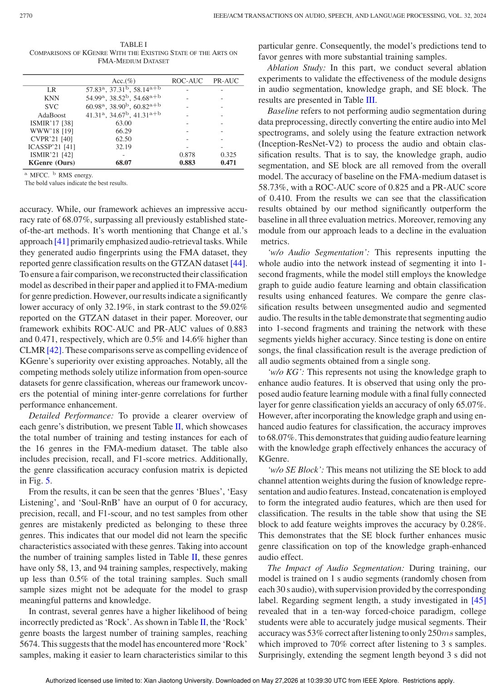
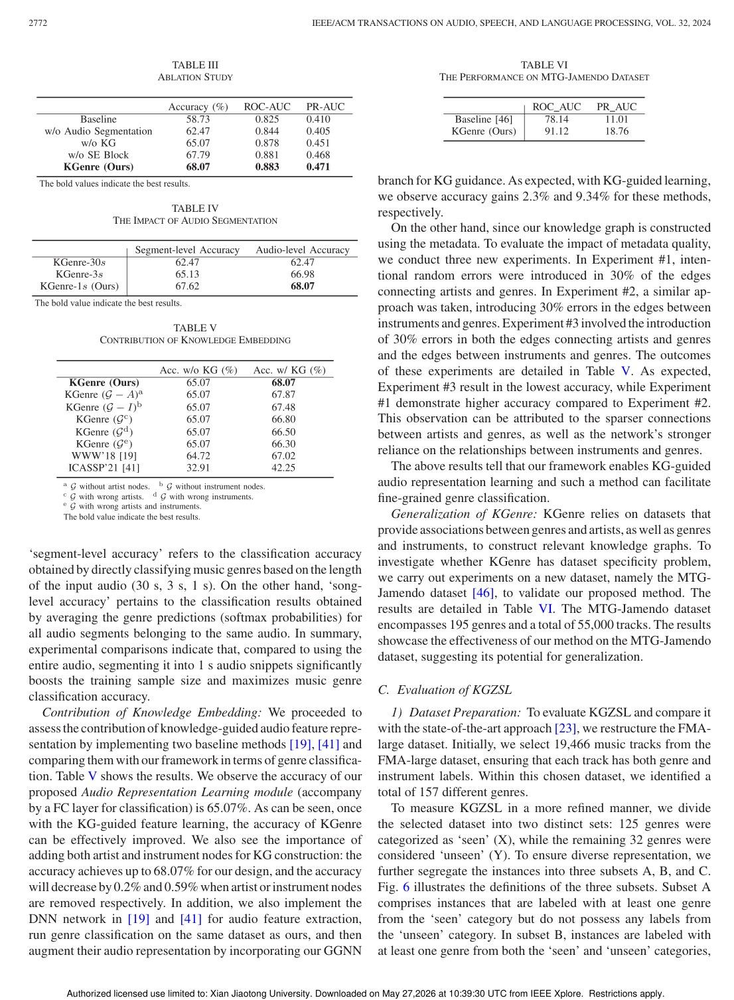

IEEE/ACM Transactions on Audio, Speech, and Language Processing, 2024
Publication
Genre Classification Empowered by Knowledge-Embedded Music Representation
Han Ding, Linwei Zhai, Cui Zhao#, Fei Wang, Ge Wang, Wei Xi, Zhi Wang, Jizhong Zhao
This work enriches music genre classification by embedding genre, artist, and instrument knowledge graphs into audio representations for fixed-set and open-set recognition.
Music Representation Learning
Xi'an Jiaotong University
Overview
Music genre classification is difficult because genre boundaries are fuzzy, audio-only features may miss semantic relationships, and new or rare genres can be underrepresented. This paper argues that music metadata can provide useful high-level structure. By constructing a knowledge graph over genres, artists, and instruments, the model can learn correlations that are not obvious from audio signals alone.
The work studies two related settings: fixed-set genre classification and open-set genre classification. In both cases, knowledge graph embeddings are used to enhance the representation learned from audio.
Knowledge Graph Motivation
A song's genre is related not only to acoustic patterns, but also to artists, instruments, and genre relationships. Public datasets such as FMA and OpenMIC-2018 contain metadata that can be organized into a graph. This graph gives the model a way to reason about genre similarity and contextual relationships without requiring extra manual annotation.
Main Contributions
- Constructs music knowledge graphs from public dataset metadata including genre, artist, and instrument relations.
- Proposes models for both fixed-set genre classification and open-set genre classification.
- Integrates high-level graph knowledge into audio representation learning.
- Shows that knowledge-embedded representations improve over audio-only state-of-the-art methods.
- Reports 68.07 percent average genre classification accuracy on FMA-medium and 42.4 percent open-set accuracy on FMA-large.
Method Design
The framework first builds graph nodes and relations from dataset metadata. Graph neural representation learning is then used to capture genre correlations. These graph-derived embeddings are fused with audio features, so the classifier can use both signal-level evidence and knowledge-level relationships. For open-set classification, the graph helps transfer information to genres with limited or no direct training samples.
Evaluation Highlights
The paper evaluates on FMA-medium and FMA-large and compares against strong music representation baselines. The reported gains suggest that genre classification benefits from structured knowledge, especially when audio cues alone are ambiguous or when genre labels have uneven data support.
Takeaways
The work connects audio machine learning with knowledge graph reasoning. Its main value is showing that metadata already present in music datasets can be converted into useful semantic structure rather than being ignored during representation learning.
Paper Screenshots: Method, Principle, And Results
The screenshots below are cropped from the paper PDF and are placed next to the reading notes so the page shows the actual method diagrams, principle illustrations, and result evidence rather than only prose.


Resources
{kind=link}
Citation
@inproceedings{genre-classification-empowered-by-knowledge-embedded-music-representation,
title = {Genre Classification Empowered by Knowledge-Embedded Music Representation},
author = {Han Ding and Linwei Zhai and Cui Zhao# and Fei Wang and Ge Wang and Wei Xi and Zhi Wang and Jizhong Zhao},
booktitle = {IEEE/ACM Transactions on Audio, Speech, and Language Processing, 2024},
year = {2024}
}